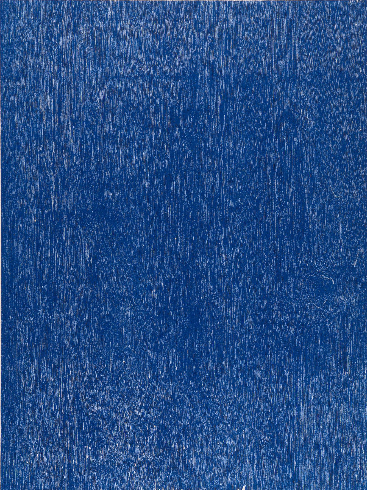
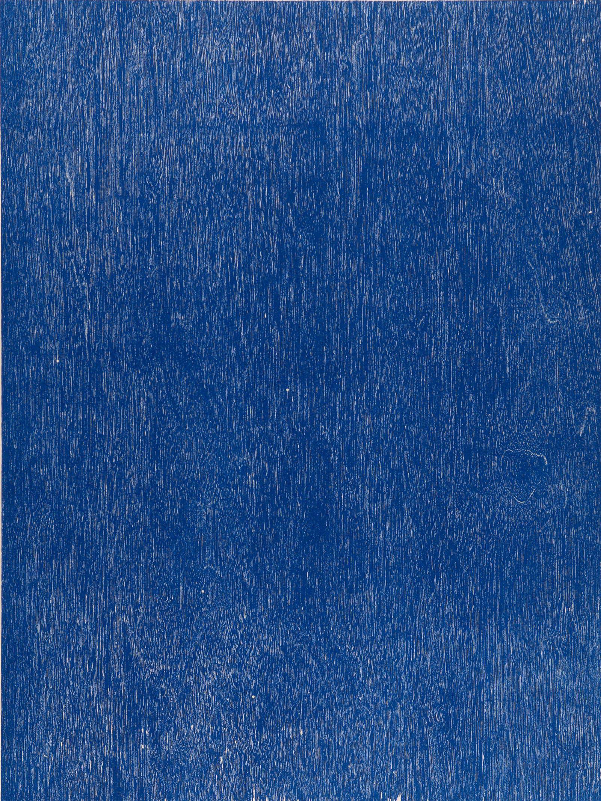

We are inviting you to find John Nixon through his artworks, the man of non objective abstraction.
On 18 Aug 2023 At State Library Victoria
John Nixon (born Sydney1949, died Melbourne 2020) is internationally recognised as a seminal figure in Australian art. For over 50 years, Nixon produced and exhibited abstract and conceptual works that extended the possibilities of radical modernism. Through constant experimentation with formalist tactics, Nixon sought to redefine the possibilities and interpretations of the monochrome, construction painting, readymade, and non-objective abstraction, and as a result, contemporised the ideologies of modernist predecessors who influenced his work.


 
